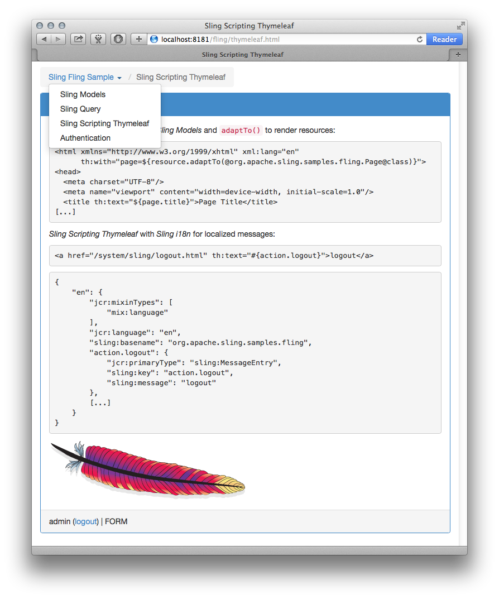

Sling Scripting Thymeleaf
Sling Scripting Thymeleaf is the scripting engine for Thymeleaf (3.0) templates.
Features
- Supporting all of Thymeleaf's extension points: TemplateResolvers, MessageResolvers, Dialects, LinkBuilders, DecoupledTemplateLogicResolver, CacheManager and EngineContextFactory
SlingResourceTemplateResolvercustomizable throughTemplateModeProviderResourceBundleMessageResolverbacked byResourceBundleProviderfrom Sling i18n customizable through optionalAbsentMessageRepresentationProviderPatternTemplateModeProvidersupportingPatternconfigurations for all template modes (HTML,XML,TEXT,JAVASCRIPT,CSSandRAW)SlingDialect- Thymeleaf's
TemplateEngineregistered as OSGi Service (ITemplateEngine) for direct use
Installation
For running Sling Scripting Thymeleaf with Sling's Launchpad some dependencies need to be resolved. This can be achieved by installing the following bundles:
mvn:org.attoparser/attoparser/2.0.2.RELEASE
mvn:org.unbescape/unbescape/1.1.4.RELEASE
mvn:org.apache.servicemix.bundles/org.apache.servicemix.bundles.ognl/3.2_1
mvn:org.javassist/javassist/3.20.0-GA
There is a feature for Karaf:
karaf@root()> feature:install sling-scripting-thymeleaf
Note: Sling Scripting Thymeleaf requires an implementation of OSGi Declarative Services 1.3 (e.g. Apache Felix Service Component Runtime 2.0.0 or greater)
Configuration
Apache Sling Scripting Thymeleaf “ScriptEngineFactory”
By default Sling Scripting Thymeleaf's ScriptEngineFactory is configured for templates with extension html and mime type text/html and uses all of Thymeleaf's standard extensions either also or exclusively.

Apache Sling Scripting Thymeleaf “Sling Resource TemplateResolver”
The Sling Resource TemplateResolver is configured to resolve templates with use decoupled logic enabled.

Apache Sling Scripting Thymeleaf “Pattern TemplateModeProvider”
The Pattern TemplateModeProvider is configured to match template paths against default extensions for providing template modes (of course except no-op mode RAW).

Apache Sling Scripting Thymeleaf “ResourceBundle MessageResolver”
The ResourceBundle MessageResolver is configured to use the message's key as absent message representation.

Sling Dialect
Sling Scripting Thymeleaf comes with its own dialect using the sling prefix/namespace currently supporting the include feature known from Sling Scripting JSP Taglib.
include
<header data-sling-include="${resource}" data-sling-resourceType="'example/page/header'" data-sling-unwrap="true"/>
include - The resource object (Resource) or the path (String) of the resource object to include in the current request processing. If this path is relative it is appended to the path of the current resource whose script is including the given resource.
supported options (* = RequestDispatcher option)
addSelectors(String) *: When dispatching, add the value provided by this option to the selectors.replaceSelectors(String) *: When dispatching, replace selectors by the value provided by this option.replaceSuffix(String) *: When dispatching, replace the suffix by the value provided by this option.resourceType(String) *: The resource type of a resource to include. If the resource to be included is specified with the path attribute, which cannot be resolved to a resource, the tag may create a synthetic resource object out of the path and this resource type. If the resource type is set the path must be the exact path to a resource object. That is, adding parameters, selectors and extensions to the path is not supported if the resource type is set.unwrap(Boolean): removes the host element
Class Diagram

Sample
The Sling Fling Sample is a sample using Sling Scripting Thymeleaf with Sling Models and Sling Query.
